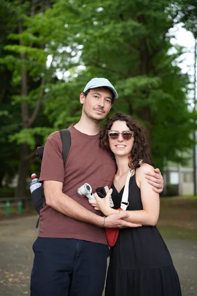
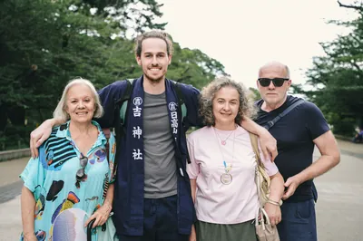
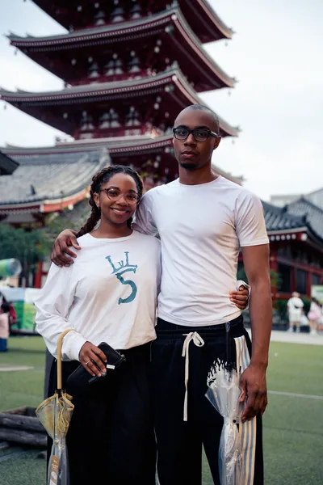
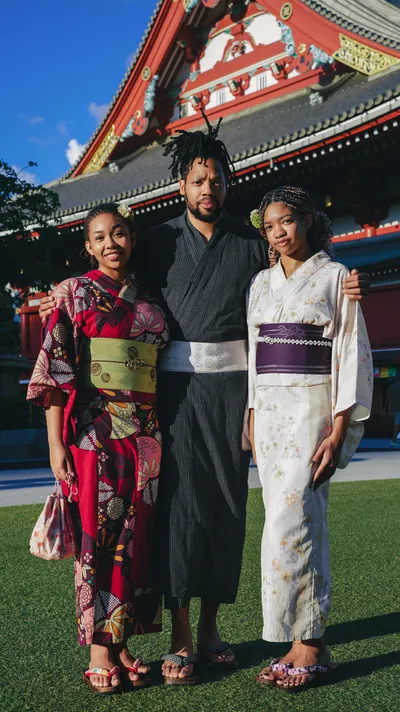
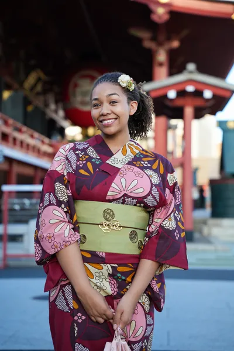

旅人Visitors
同一個夏天拍的幾組客人。情侶、家庭、租了浴衣的朋友，還有只是想在期待了一年的地方留下一張好照片的人。
A mix of sessions from one summer. Couples, families, friends in rented yukata, and people who just wanted one good photograph of themselves somewhere they had been looking forward to for a year.





